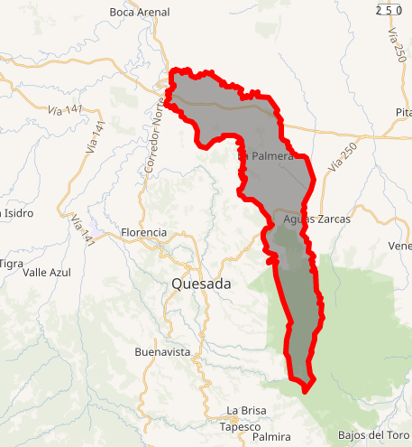
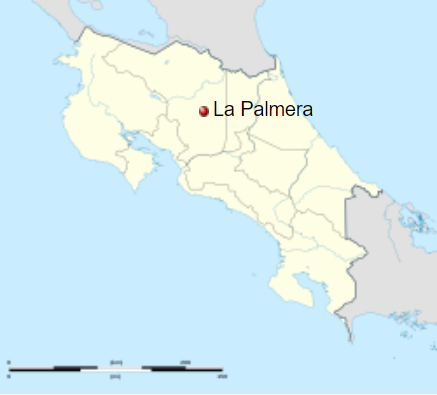

Knowing La Palmera
The scarlet macaw (Ara macao) is a large yellow, red and blue Central and South American parrot, a member of a large group of Neotropical parrots called macaws. These beatifull birds fly on La Palmera's sky. Like its relative the blue-and-yellow macaw, the scarlet macaw is a popular bird in aviculture as a result of its striking plumage.
This area has several protected areas, lakes, lagoons, volcanoes, rivers and waterfalls. In order to take advantage of these natural resources, there has been a thriving tourism development in services and adventure sites, for the enjoyment of nature. Its a sanctuary for aquatic birds, reptiles, mammals and the prehistoric gaspar fish.
A hot spring, hydrothermal spring, or geothermal spring is a spring produced by the emergence of geothermally heated groundwater onto the surface of the Earth. Hot spring water often contains large amounts of dissolved minerals. Humans have made use of hot springs for bathing, relaxation, or medical therapy for thousands of years.
Education has a major role to play in tackling inequality and Poverty, growing challenges in Costa Rica, where the poverty rate is twice the OECD average. In absolute terms, children from disadvantaged backgrounds are more likely to than ever of receiving a full school education and graduating at the university level.
Sport in Costa Rica is practiced both professionally and as an amateur, covering a large number of disciplines. The most popular sport in the country is soccer, although the most practiced is athletics. Other popular sports in the country are cycling, basketball, boxing, surfing, bowling, baseball, and swimming.
La Palmera District
|  | |
|  | |
| Location in Costa Rica | |
|---|---|
| Coordnates: | 10.3652639°N 84.3983932°W |
| Country | Costa Rica |
| Province | Alajuela |
| Canton | San Carlos |
| Creation | February 5° 1952 |
| Total area | 100.45 km² (38.78 sq mi) |
| Elevation | 350m (1.150 ft) |
| Population | 6 321 (63/km²) |
| Time Zone | UTC-06:00 |
| Postal code | 21009 |
History
The territory of La Palmera was discovered in 1858 when the German Juan Braun and Carlos Castillo, They denounced 400 hectares located between the Kooper River and San Rafael. By 1877 Teodoro Koschny and Teodoro Prestinary appear in the records as denouncers of 1684 hectares adjacent to those of Braun and Carrillo.
In 1880, Eusebio Rodríguez Quesada, Francisco Eulogio Fernández yielded to the former president of the República, Joaquín Rodríguez Zeledón the lands they had in the area. The La Marina farm is Founded in 1924 with the merger of the La Seiba and La Marina haciendas, the property was acquired by Abelardo Rojas Quesada.
In a first stage, José Joaquín Rodríguez can be mentioned as pioneers of the area Zeledón, Alfonso Pérez, Antolin Chinchilla, Crecincia Rojas and Juan Rafael Rojas. After this, a process of colonization of the district of La Palmera began with the distribution from the farm of former president Joaquín Rodríguez and Aquileo Saborío, Emilio Paniagua and his wife Ukraine Saborío, Juan Félix Blanco Acuña, Marcelino Vargas and Ramón Cruz Lara, who they can be classified as the forgers at the head of the district. However, in addition to the founders who opened the field in the mountains, the work of the leaders Juan María Saborío, Ademar Céspedes Ulate, William Vega, among others, is also recognized.
La Palmera acquired the category of district number nine of San Carlos in 1962. The main activity of this place is livestock, and to a lesser extent the cultivation of citrus fruits, sugar cane, roots and tubers.
Geograpy
La Palmera has an area of 100.45 km² which makes it the eleventh district of the canton by area and a mean elevation of 350 metres. It is located at an elevation range between 100 and 2200 meters above sea level. It is located in the northern region of the country and borders four districts; Cutris to the north, Aguas Zarcas to the East, Florencia and y Quesada to the west. While to the south it borders with the canton of Sarchí. Its head, the town of La Palmera, is located 19.4 km (54 minutes) NE of Ciudad Quesada and 106 km (3 hours 4 minutes) to the NW of San Jose the capital of the nation.
Demographics
For the 2011 census, La Palmera had a population of 6,321 inhabitants. It is the tenth more populated district of the canton, behind of Quesada, Aguas Zarcas, Pital, La Fortuna, Florencia, Pocosol and Cutris.
Settlements
La Palmera has 6 population centers:
- La Palmera (head of the district)
- La Marina
- Santa Rosa
- Concepción
- San Francisco
- La Unión
Economy
The main activity of this place is livestock, and in less proportion the cultivation of citrus, sugar cane, roots and tubers. There is also the exploitation of calcium carbonate. Tourist services are also offered in the facilities of La Marina and the thermal waters (shares sources with Aguas Zarcas) where you can appreciate the nature that characterizes the place. La Palmera urban area, has health services, educational, restaurants and grocery stores.